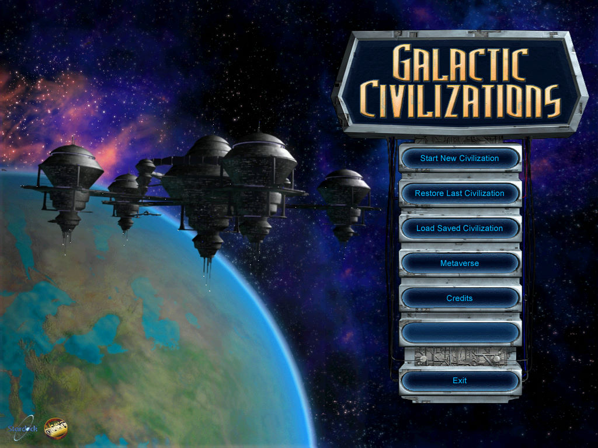
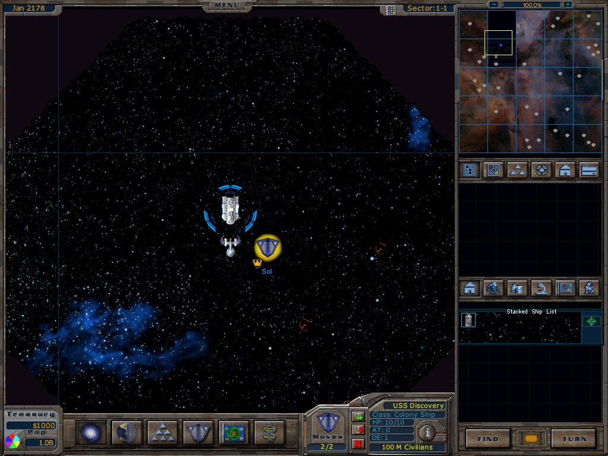

名稱：銀河文明1 (Galactic Civilizations，英文版)
簡介：Stardock 2003年出品的回合制策略遊戲，由Strategy First代理發行。2004年再推出
「亞德里安預言（Altarian Prophecy）」資料片，2006年則推出整合二者的「終極版
（Ultimate Edition）」 [待補]。


保護：主程式為序號（DN-500792-GC1-CLS4FLT8XT）
資料片為序號（DN-020782-AP1-DN9LPUZVN5）
備註：資料片需要主程式更新至1.20版，但目前已找不到英文版1.20更新檔（德文版無作用）。
檔案：Altarian Prophecy.rar = 資料片1.51版安裝檔